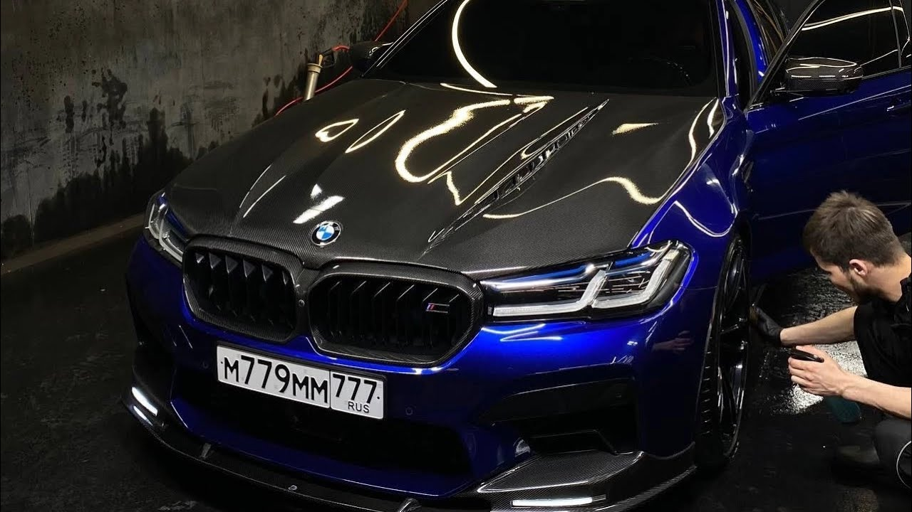
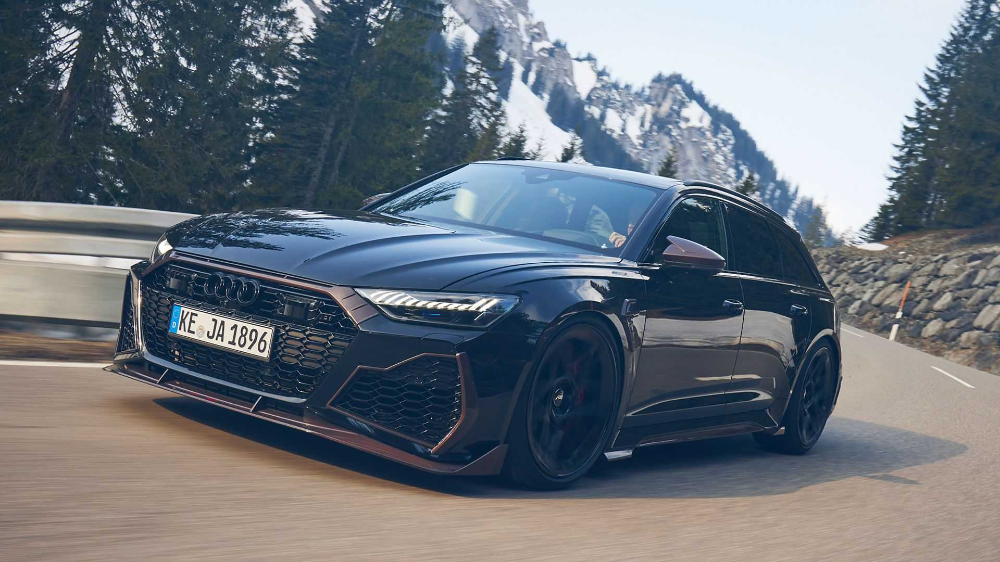

BMW
Audi
Porsche

.jpg)

| Mercedes-Benz BMW Audi Porsche |
German cars |
|
| Mercedes-Benz | „Мерцедес-Бенц“ (на немски:
Mercedes-Benz, произношение е търговска марка и
едноименна компания – производител на премиум автомобили,
камиони, автобуси и други превозни средства, който е част от
немския концерн „Мерцедес-Бенц Груп“. |
|
| BMW | БМВ е германска компания с дейност
обхващаща производство и продажба на моторни превозни
средства (МПС), резервни части и аксесоари за МПС, продукти
на машиностроенето, както и свързани с тях услуги. БМВ АД е
фирмата-майка на концерна БМВ Груп, която е пазарно
ориентирана към сектора „Автомобили“, „Мотоциклети“,
„Финансови услуги“ и „Други дружества“. |
 |
| Audi | Audi AG („Ауди“) е германски
автомобилен производител със седалище в Инголщат, Бавария,
Германия. Част е от Volkswagen Group (Volkswagen AG) от 1964
г., като марката винаги е била символ на качество,
сигурност, комфорт и здравина. |
 |
| Porsche | Porsche (По̀рше) е германски
производител на автомобили от най-високия ценови и стилов
клас в света. Производствените мощности на
фирмата-производител са в град Щутгарт, провинция
Баден-Вюртемберг, Германия. В „Porsche“ работят 24 481
служители по данни към 2015 г. |
|